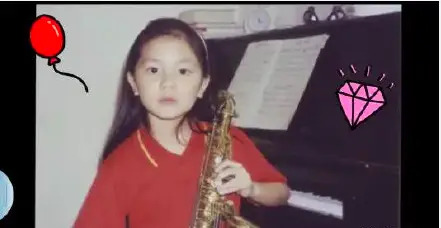

G.E.M. was born in the year of 1991, in Shanghai China, and named Tang Sze-wing (邓诗颖). At the age of four, she moved to Hongkong. With a music background that runs in the family, she became interested in music at a very young age. She was skilled in piano and could write songs at the age of 5. In 2006, when she was 15, she won the championship in a singing contest called Spice It Up. This helped her catch the attention of Chang Tan (张丹), who then recruited her for Hummingbird Music, a recording company. Therefore, she became a professional singer at 16.
Career
Under the instruction of Hummingbird Music, G.E.M. took on the name Deng Zi-qi (邓紫棋) and the name G.E.M., which stood for Get Everyone Moving. In 2008, she released her first album, which included two Mandarin songs and three Cantonese songs. One characteristic of G.E.M. is that she publishe songs both in Mandarin and in Cantonese, which some say she took from Eason Chan (陈奕迅), another Hongkong singer. In the years 2008-2018, she released four albums along with many singles. She also held many concerts in Hongkong, Mainland China, and around the world.
But what really got her famous was her participation in I Am a Singer Season 2. In this singing contest, she sang her original song 泡沫 (Bubbles). The song, with its heartbreaking lyrics and G.E.M's vivid performance, became viral and G.E.M. became known all throughout Mainland China almost overnight. From this point on, G.E.M.'s career just went up and up. She was featured in Forbes 30 Under 30 (music), being the only Asian musician on the list. In 2016, she released the Chinese theme-song for the film "Passengers" named "Light Years Away", whose MV (as of Feb, 2024) has 227 million views on Youtube. In 2018, she was selected as KKbox Artist of the Year, and much more. Her success is baffling, considering how quick she got famous and the amount of time she's been famous. But undeniably, she has talent and the personality to go with it.
Controversy
DISCLAIMER: THIS SECTION MAY CONTAIN BIAS ON THE TOPIC DISCUSSED
In G.E.M.'s early years of fame, she often experienced scandals. She was shamed for her fondness of leather pants. She was criticized for having an attitude just because she's famous. Some argued these were all her fault, but others argue that it was the fault of Hummingbird Music for not properly managing G.E.M.'s image.
In 2019, G.E.M. announced she will no longer be contracted under Hummingbird Music and will be operating as an independent artist. Her reason for the break was that Hummingbird Music treated her as a product and did all they can to exploit her value. However, this lead to several lawsuits with Hummingbird Music because Hummingbird Music believed that their contract with G.E.M. ends in 2022 while G.E.M. believe it ended in 2019. If Hummingbird Music were to win the lawsuit, G.E.M.'s ownership of the songs she published from 2012 to 2022 will rightfully belong to Hummingbird Music; she won't even be able to use the name G.E.M.
As of now, the lawsuit is still ongoing and it is uncertain who will win. There has been hot debates amongst Chinese netizens regarding who exactly is at fault. Some say Hummingbird Music is too greedy in exploiting G.E.M.'s value while others argue it was G.E.M. that violated the contract first. Only time can tell.
**Credit to Wikipedia and Zhihu for the information on this page.
 Under the instruction of Hummingbird Music, G.E.M. took on the name Deng Zi-qi (邓紫棋) and the name G.E.M., which stood for Get Everyone Moving. In 2008, she released her first album, which included two Mandarin songs and three Cantonese songs. One characteristic of G.E.M. is that she publishe songs both in Mandarin and in Cantonese, which some say she took from Eason Chan (陈奕迅), another Hongkong singer. In the years 2008-2018, she released four albums along with many singles. She also held many concerts in Hongkong, Mainland China, and around the world.
Under the instruction of Hummingbird Music, G.E.M. took on the name Deng Zi-qi (邓紫棋) and the name G.E.M., which stood for Get Everyone Moving. In 2008, she released her first album, which included two Mandarin songs and three Cantonese songs. One characteristic of G.E.M. is that she publishe songs both in Mandarin and in Cantonese, which some say she took from Eason Chan (陈奕迅), another Hongkong singer. In the years 2008-2018, she released four albums along with many singles. She also held many concerts in Hongkong, Mainland China, and around the world.